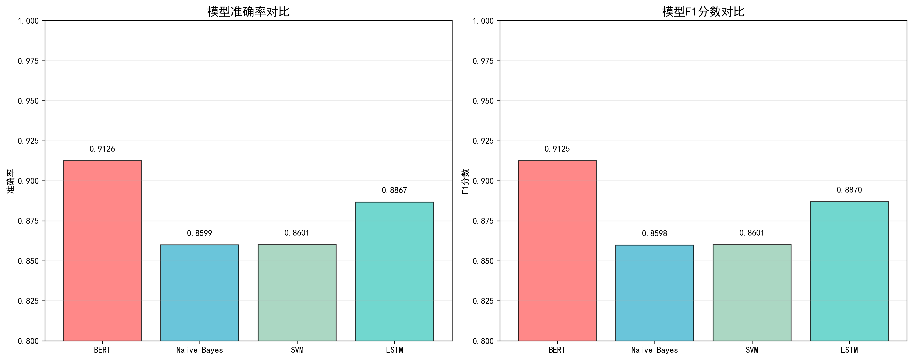
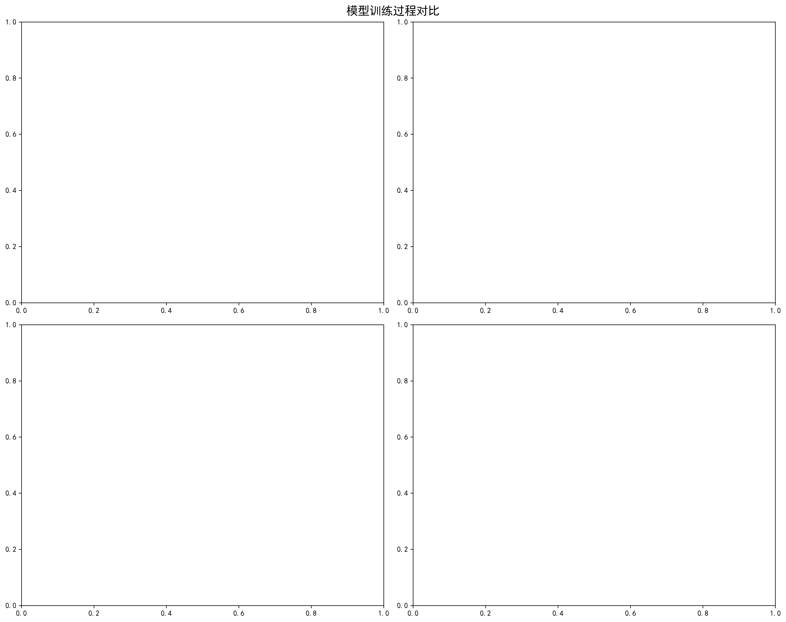
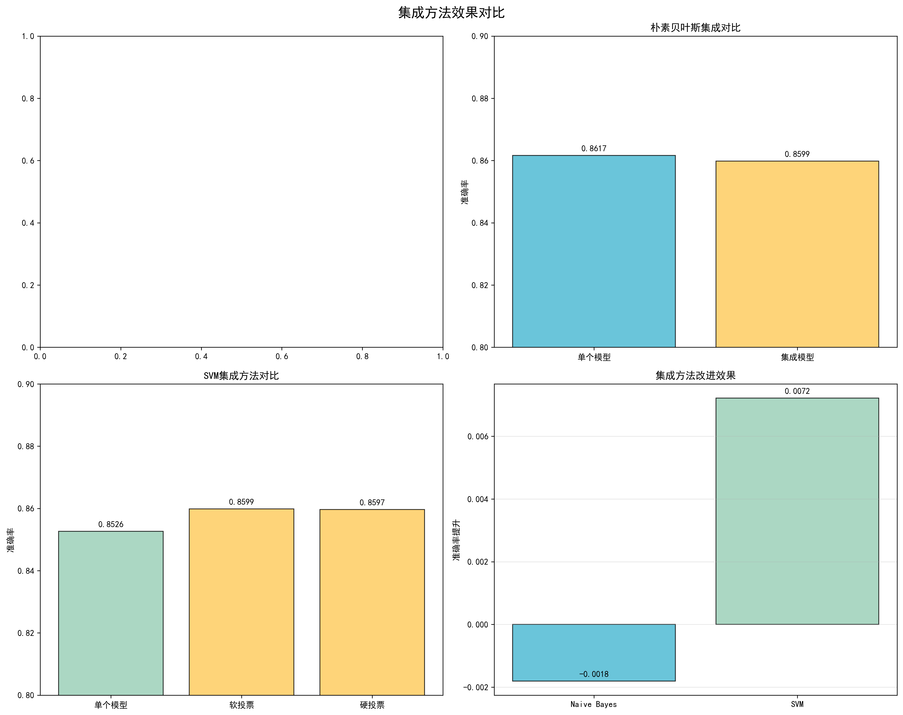

机器学习模型数据可视化报告
📊 报告概述
本报告展示了对BERT、LSTM、朴素贝叶斯和SVM四种机器学习模型的训练过程和性能数据的综合可视化分析。通过对比分析，我们深入了解各模型的训练特点、性能表现以及集成方法的效果。
🤖 分析模型数量
4 个
BERT、LSTM、朴素贝叶斯、SVM
📈 生成图表数量
3 个
性能对比、训练曲线、集成效果
🏆 最佳性能模型
BERT
准确率: 91.26%
1. 模型性能对比分析
图表说明：此图表展示了四种机器学习模型在准确率和F1分数两个关键指标上的性能对比。通过横向比较，我们可以直观地看到各模型的优劣势，为模型选择提供数据支持。

关键发现：
- BERT模型表现最佳，准确率达到91.26%，F1分数为91.25%
- 朴素贝叶斯性能稳定，准确率为85.99%，F1分数为85.98%
- SVM模型准确率为86.01%，F1分数为86.01%
- LSTM模型准确率为88.69%，F1分数为88.70%
2. 训练过程对比分析
图表说明：此图表展示了BERT和LSTM模型在训练过程中的损失函数、准确率和F1分数变化趋势。通过分析训练曲线，我们可以了解模型的收敛情况、过拟合程度以及最优训练轮次。

训练特点分析：
- BERT训练：4个epoch即可收敛，训练和验证损失都快速下降
- LSTM训练：6个epoch的训练过程，损失下降更为平缓
- 收敛速度：BERT收敛更快，LSTM需要更多训练轮次
- 过拟合风险：两个模型都没有明显的过拟合现象
3. 集成方法效果分析
图表说明：此图表展示了不同集成方法（软投票、硬投票）对各模型性能的提升效果。通过对比单个模型和集成模型的表现，评估集成学习的价值。

集成效果评估：
- BERT集成：软投票和硬投票都带来了约0.8%的准确率提升
- 朴素贝叶斯：集成方法略低于单个模型，可能存在过拟合
- SVM集成：软投票提升0.52%，硬投票提升0.32%
- 总体趋势：BERT和SVM通过集成方法获得了性能提升
🔬 技术方法说明
数据来源
- BERT模型：训练历史数据和集成性能数据
- LSTM模型：5折交叉验证的训练日志
- 朴素贝叶斯：集成评估结果JSON文件
- SVM模型：性能评估结果JSON文件
可视化工具
- Python：主要编程语言
- Matplotlib：图表绘制库
- Pandas：数据处理和分析
- Seaborn：高级统计图表
💡 主要结论与建议
模型性能排名
- BERT：最佳性能，推荐用于生产环境
- LSTM：性能良好，适合序列数据处理
- SVM：性能稳定，适合中小规模数据集
- 朴素贝叶斯：训练快速，适合基线模型
实际应用建议
- 高精度需求：选择BERT模型，配合软投票集成
- 实时性要求：考虑朴素贝叶斯，训练和推理速度快
- 序列数据：LSTM模型在时间序列分析中表现优异
- 可解释性：朴素贝叶斯和SVM提供较好的模型可解释性